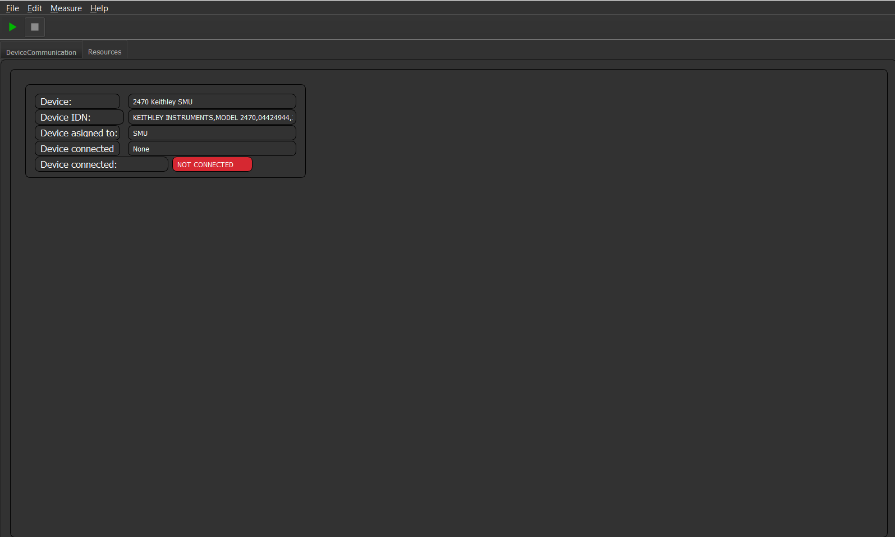

Resources Tab¶
The Resource tab GUI plugin is a plugin which you can be added to every project. It shows you all configured devices and its connection state as well as some further information. This can come in handy to determine if all devices are accessible to the machine.
The GUI looks like this:
The GUI should be self explanatory.
Note
The more devices are configured the more widgets will be generated inside the tab.
To add this GUI element just add it with the name Resources in your Project configuration.